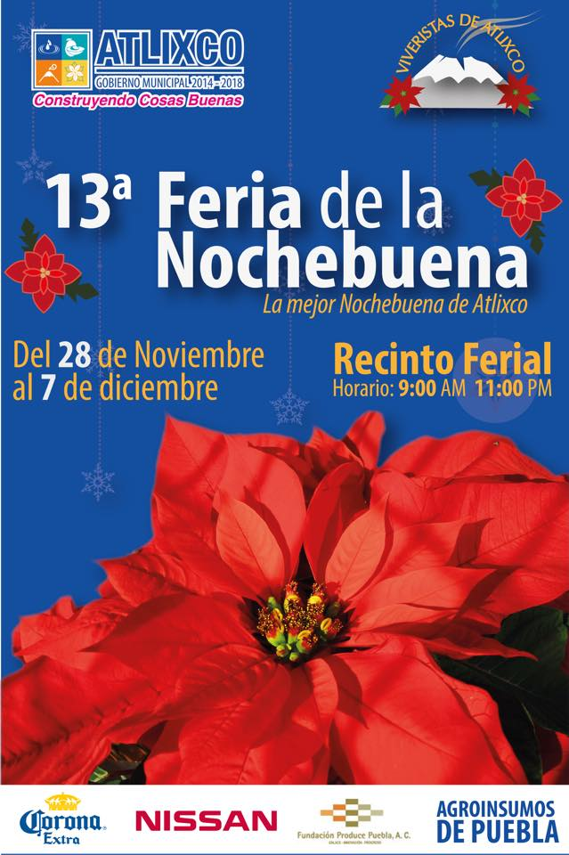

Inauguracion
Atlixco, Pue.- La noche de este martes, ante miles de familias y un espectáculo de pirotecnia, el alcalde de Atlixco, José Luis Galeazzi Berra, inauguró la Cuarta Edición de la Villa Iluminada, que concluirá el próximo 6 de enero de 2015. En esta ocasión, a través de 3 mil figuras nuevas y durante 43 días, todos los visitantes podrán disfrutar de la belleza arquitectónica de la ciudad de Atlixco, que se embellece con luces coloridas de variantes tonos y escenas alusivas a la época decembrina y la identidad atlixquense. Posterior al encendido, hubo un espectáculo de nieve en la calle Constitución, que miles de pequeños, con sus familias, disfrutaron al máximo. Villa Iluminada espera la llegada de entre 450 a 500 mil visitantes, lo cual permitirá tener una derrama económica de 55 a 60 millones de pesos, pues habrá poco más de 100 eventos culturales y artísticos, con la participación de 30 grupos provenientes de países como Guatemala, Colombia, España, Perú, Irlanda, Libia, Chile, Kenia e Italia, así como de México y la región. El recorrido inicia, como ya es tradición, en la Avenida Hidalgo esquina con la calle 7 sur, atravesando el Zócalo de la ciudad y continúa por la Calle Constitución, pasando por la calle 4 norte, frente al Ex Convento del Carmen, la calle Nicolás Bravo, recorriendo el Boulevard Ferrocarriles para finalizar en el Parque Revolución. También, dentro de Villa Iluminada se va a presentar la Feria de la Nochebuena, del 28 de noviembre al 7 de diciembre y la Villa Infantil, que es un proyecto enfocado a los pequeños, a partir del día 12 de diciembre, ambos en el interior del Recinto Ferial.CHELSEA:3

13° Feria de la Nochebuena
Atlixco. Del 28 de noviembre al 7 de diciembre se llevará a cabo la 13° Feria de la Nochebuena, en el Recinto Ferial de Atlixco, donde las familias podrán encontrar alrededor de 27 variedades de esta flor tradicional de la época decembrina.
Francisco Santiago Cruz, Presidente de la Mesa Directiva que organiza esta Feria, señaló que durante 13 años consecutivos se ha realizado este evento, en el cual participarán más de un centenar de productores, quienes expondrán 25 mil plantas y buscan comercializar cerca de 150 mil ejemplares a precios accesibles.
Informó que la nochebuena de color rojo es la más vendida, de ahí que se produzca un 80% del total en Atlixco, el otro 20% corresponde a nochebuenas de las diferentes variedades y colores; asimismo solicitó a la administración municipal no dejar de lado el viverismo, pues aunque la Feria de la Nochebuena es un evento temporal, representa todo un año de producción, lo que significa muchos empleos directos e indirectos.
En tanto Vicente Cruz Torres, productor y organizador de esta Feria, señaló que realizar esta feria no es tarea sencilla, ya que el trabajo de siembra inicia desde el mes de marzo, para poder contar en esta época con todas las variedades y tamaños de esta tradicional flor: “Es un trabajo arduo, porque prácticamente todo el año estamos en eso, pero con mucha satisfacción, porque estamos convencidos que se generan fuentes de empleo en el municipio”.
El municipio de Atlixco anunció su XIII Feria de la Noche Buena, la cual se desarrollará dentro del marco de la Villa Iluminada Atlixco 2014, y en la cual se espera una afluencia de por lo menos 500 mil visitantes, registrando una venta de 150 mil plantas.
En esta feria los visitantes podrán adquirir más de 25 variedades de nochebuena, en colores como el rojo, amarillo, mar oleadas, blancas, salmón, entre otros. El presidente de la comisión de esta feria, Francisco Santiago Cruz indicó que el 80 por ciento de la producción atlixquense de nochebuenas es de color rojo, encontrando distintas tonalidades.
Los precios de estas flores irán de los 15 a 150 pesos, dependiendo del tamaño y la variedad de la nochebuena.
Además, este año la oferta irá más allá, pues también se podrán adquirir árboles de navidad, artesanías, piñatas, esferas y otros adornos navideños.
Esta feria se llevará a cabo del 28 de noviembre al 7 de diciembre, en horarios de nueve de la mañana a once de la noche.


Villa Iluminada